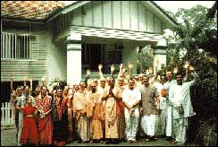

|
Type of centre: Temple
Contact details
Address: 95 Bank Rd, Graceville (mail: P.O.
Box 83, Indooroopilly)
QLD 4068
Australia
Ph: +61-(0)7-33795455
Fax: +61-(0)7-33795880
E-mail: brisbane@pamho.net
Website: www.iskcon.org.au
|
|
 |
| Brief details of centre
The Brisbane temple was started at St Lucia in 1979. In 1983
the temple opened in Graceville by the Brisbane river, and
Deities of Sri Sri Gaura Nitai were brought there. Plans are
well underway to start an entire new temple project with a
school, housing and more at Jindalee. |
|
|
| The temple is situated on the Brisbane
river with terraced gardens leading down to the water. Palm
trees and a Macadamia nut tree shade the area, where numerous
Frangipani (Campak) trees bloom flowers for the deities. |
| Deities:
Sri Sri Gaura Nitai
When installed: Sri Sri Gaura Nitai were originally
caste by Bhaskara Dasa in Melbourne, and were installed in
a travelling temple-bus. Later they resided at New Govardhana
farm, in the "White House," before moving to the present temple. |
|
|
Other Information:
Food for Life
At Brunswick St in Fortitude Valley, Hare Krishna Food for Life
or "Krishna's Cafe" provides very low cost meals of Krishna prasada.
For many who eat there, it is a welcome relief in their state of
financial shortage. Others, who have no apparent poverty, eat there
just because the food is so good. One "down and out" looking youth
was overheard commenting that the yuppies seem to think it is cool
to be seen eating at Food for Life. Food for Life has enhanced public
respect for Hare Krishna devotees in Brisbane. City managers and
others have often praised the devotees for this selfless work. On
the 23th of November 1996, devotees celebrated Feed the World Day,
making a giant Krishna cake and distributing it in the Fortitude
Valley Mall. City Council Alderman David Hinchcliffe helped cut
the cake and presented a speech extolling the valuable service Hare
Krishna Food for Life offers.
Rathayatra Festival
The Brisbane City Council so much wanted Lord Jagannatha's Chariot
to be in their annual parade that they paid for the transport of
the huge wooden chariot from Murwillumbah, NSW, and for the flowers
to decorate it. Although Brisbane is sunny almost every day in winter,
on the night of the parade in early spring there was a downpour.
Not to worry, the City Council had weather insurance, and a week
later the parade was on. As devotees towed the large, yellow and
red chariot by ropes through the city streets, the crowds cheered
and clapped, shouting greetings. The devotees chanted Hare Krishna
exuberantly, waving to the crowds; and the transcendental "float"
rolled by, with its glowing red and yellow cloth dome, illumined
from within, appearing as a beacon in the night sky.
Govindas
Brisbane's food for the body, mind and soul. 99 Elizabeth Street:
Mon-Fri 11:30am–2:30pm Fri night 5:30–8:00pm Saturdays
from 11am—2.30pm.
Right across the street from the Myers complex in downtown Brisbane,
Govinda's offers relief from the junk food of the material world.
With delicious vegie preps, hot rice, pakoras, papadams, samosas,
salad, hot halava and thirst quenching drinks, Govinda's has to
be the value for money eating spot in town. Hundreds daily patronise
Govinda's, where dedicated devotee cooks carefully prepare vegetarian
Krishna prasada (Krishna's mercy) daily.
Glory of India Project
Local devotees are developing an exciting new project which will
form the base for Krishna consciousness in the area for many years
to come. On 12.5 acres at Jindalee, which is not far from central
Brisbane, they plan to build a temple community over the next five
years or so. The plan, to be executed in stages, includes a Temple
and Worship Hall/Auditorium, a community hall and restaurant, a
school, accommodation, recreation grounds and parking. The Temple
will be approximately 425 square metres ground floor area.
The worship hall/auditorium will be on the ground level and the
temple itself on the second floor level. The worship hall will be
625 square meters. The community hall will include a communal eating
area and will be 800 square meters. On the ground floor of this
building will be the school for approximately 80 to 100 children
of primary school age (6–12 years). This will include a standard
educational curriculum enhanced by religious studies.
Adjacent to the community building will be a recreation area for
the school and visitors to the centre. Accomodation for single devotees
will include four community dwellings for up to eight devotees each
in dormitory style housing, and for married couples six duplex style
buildings providing twelve dwelling units in town house style.
< Back · Top
^
|
|